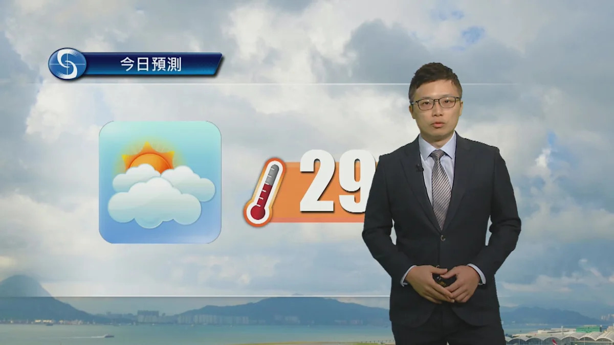
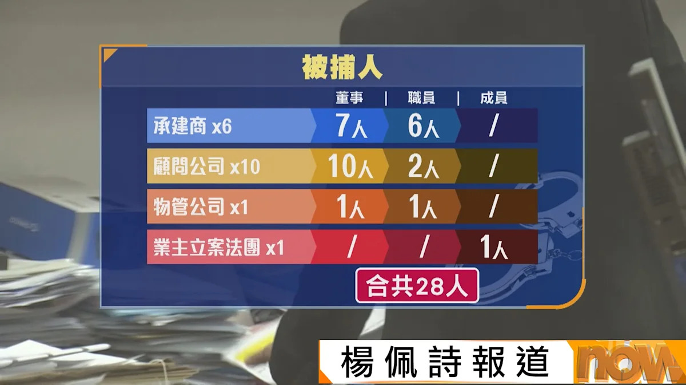
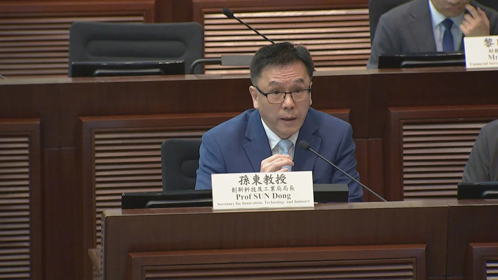
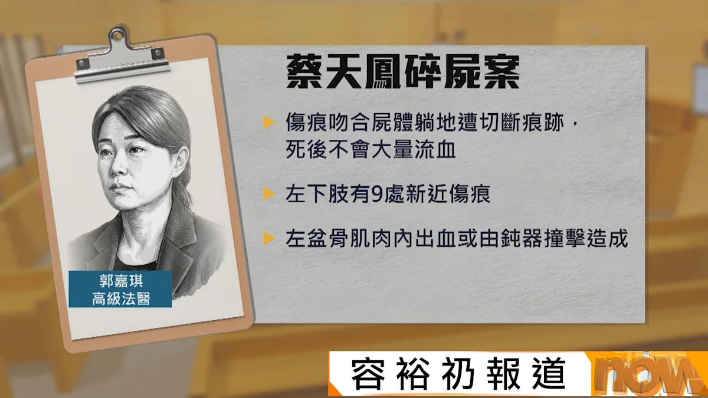
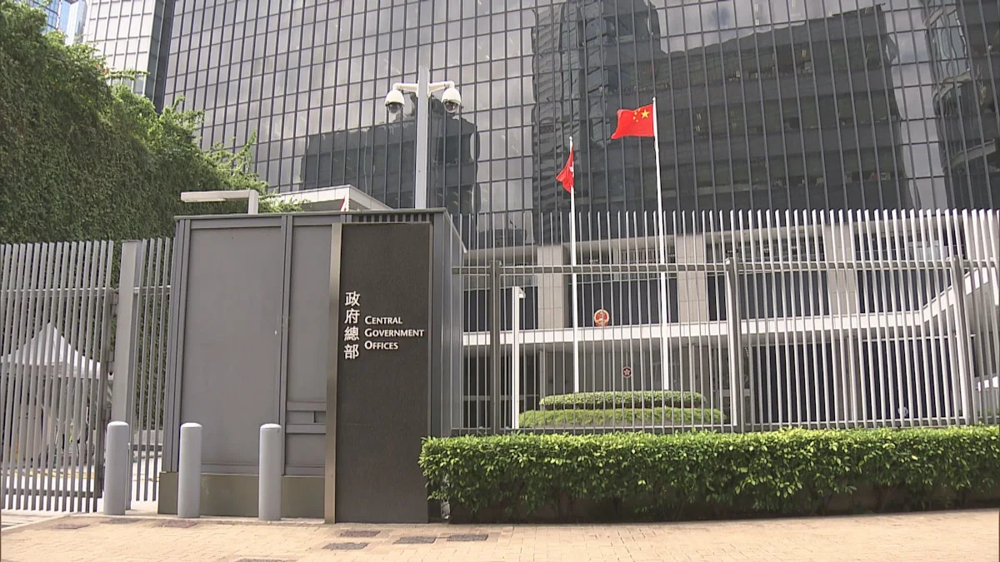
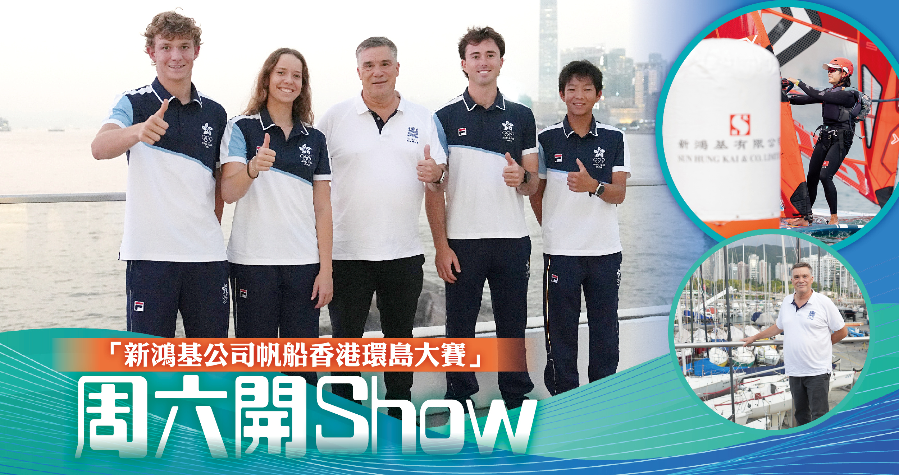
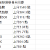
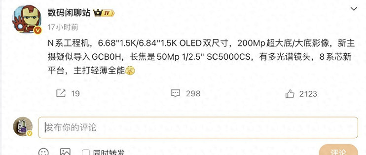
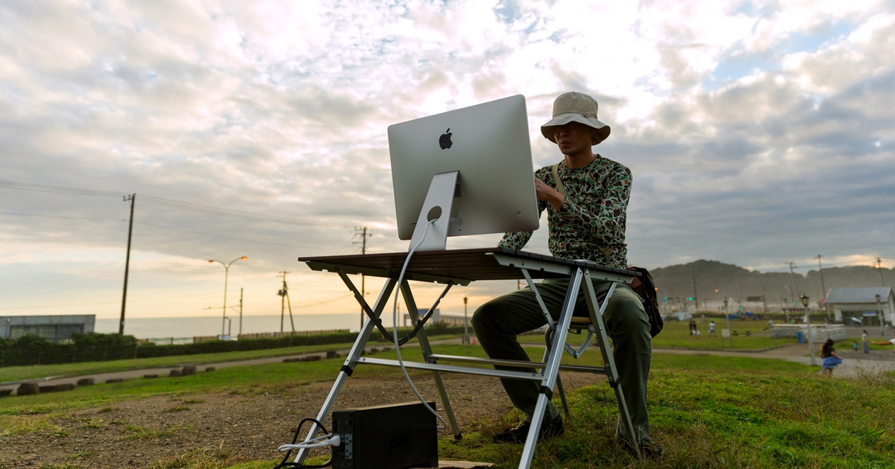

📰
焦點新聞 - Google 新聞
焦點新聞 - Google 新聞
美股｜AI交易急降溫 標指挫逾4% 單日市值蒸發3萬億美元 - Yahoo 財經
美股周四遭遇史詩級拋售，納指急瀉 5.5%，標指挫 4.3%，道指跌 1833 點，單日市值蒸發約 3 萬億美元。市場憂慮民主黨重奪國會後收緊 AI 監管，拖慢數據中心基建步伐，AI 及半導體股成重災區。
美股遭遇 19 個月來最猛烈拋售，納指單日挫 5.5% 正式進入技術調整；本港方面，打擊圍標聯合特遣隊首擊拘捕 28 人，立法會通過向新田科技城注資 100 億元。
美股周四遭遇史詩級拋售，納指急瀉 5.5%，標指挫 4.3%，道指跌 1833 點，單日市值蒸發約 3 萬億美元。市場憂慮民主黨重奪國會後收緊 AI 監管，拖慢數據中心基建步伐，AI 及半導體股成重災區。

📰今日大致多雲，早晚有一兩陣雨，最高氣溫約 29 度。東北季候風正影響廣東沿岸，週末風勢頗大；下週二及週三市區最低氣溫降至約 18 度，新界更清涼。

📰打擊樓宇大維修圍標的聯合特遣隊成立後偵破首宗案件，拘捕 28 人，部分人有黑社會背景，涉及 20 份工程合約，當中 12 份已批出、總額約 1 億元，另成功阻截 8 份未批出合約。當局將設立賞金舉報熱線。

📰立法會財委會通過向新田科技城有限公司注資 100 億元。創新科技及工業局局長孫東表示，相信 7 年內不會再就營運開支回來要求撥款；有議員要求設立恆常機制交代資金運用。
澳門首宗國安案宣判，前立法會議員區錦新顛覆國家政權罪成，判囚 12 年半。法院指被告長期協助境外敵對組織散播顛覆主張，煽動對中央的仇恨。
近 400 間港企參展上海進博會，不少企業首次參展，希望藉平台進軍內地市場。貿發局主席馬時亨指，面對內地消費升級，本港企業須不斷創新。

📰蔡天鳳案續審，法醫指死者頭部傷勢較大機會由鈍物打擊所致，左下肢有 9 處新近傷痕。控方已完成舉證，下週起由辯方傳召證人。
美國中期選舉民主黨橫掃國會參眾兩院，共和黨失去兩院控制權。外界關注民主黨重掌國會後，對華政策與對台軍售會否轉向，以及會否調查特朗普家族。

📰前香港眾志秘書長黃之鋒承認串謀勾結外國勢力罪，判囚 10 年。特區政府強烈譴責外部勢力污衊抹黑法庭判刑，強調會堅定不移依法履行維護國家安全的職責。
屯門怡樂花園收到執法機關通知，煞停原定的大維修業主大會。事件與聯合特遣隊搗破的圍標集團有關，該集團涉嫌滲透多個屋苑法團操控招標。
元朗白沙村一個擺放衣紙及紙紮用品的貨倉發生三級火，燃燒近四小時至凌晨約 2 時 39 分大致救熄。由於水源偏遠，消防要從約 700 米外拖喉灌救；12 人自行疏散，無人受傷。
粵港澳三地警方聯手展開代號「雷霆 2026」的大規模反黑行動，香港警方搜查逾 1500 處地點，搗破逾 700 個非法場所，拘捕 4749 人，檢獲現金、毒品及非法物品總值 6.97 億元。被捕者包括今年 7 月尖沙咀酒吧謀殺案的和勝和頭目。

📰香港遊艇會主辦的帆船香港環島大賽今日在維多利亞港上演，超過 200 支船隊、約 1500 名帆船好手參賽，多名亞運獎牌得主代表港隊出戰，全程約 45 公里環繞香港島一周。
市場憂慮民主黨重奪國會影響 AI 基建投資步伐，美股周四遭遇猛烈拋售。道指跌 1833 點報 51523 點，標指挫 4.36% 報 7353 點，納指急瀉 5.52% 報 24315 點，陷入技術性調整。
受美股暴跌拖累，台股今早低開 6.4%，跌穿四萬關口報 38916 點，盤初跌幅擴至近 9%。台積電低開 9.8%，電子零組件類股領跌。
港交所第三季淨利潤 49 億元，按年跌 1%、按季跌 10%，遜於預期；首三季盈利則按年升 15%。外匯基金第三季投資收入 186 億元，首三季累計達 1719 億元。
英國加息 0.25 厘，是三年來首次。英鎊兌美元報 1.3453。
恒指收報 24481 點，跌 315 點或 1.3%。北水全日淨流入 24.15 億元，淨買入最多的是騰訊、美團及阿里，淨賣出最多的是小米、長飛光纖及建行。
中藥飲片供應商新荷花今日中午截飛，公開發售初步錄得超額認購 2192 倍，吸引 5.9 萬人認購。招股價 40.2 至 50.55 元，預期 11 月 11 日掛牌。
全球 AI 股遭拋售之際，Anthropic 計劃中的 IPO 面臨估值壓力。該公司目標估值約 1.5 萬億美元，但有大型投資者質疑估值過高，認為下調至約 1 萬億美元才合理。
市場擔憂 AI 監管收緊，數據中心擴張可能放緩，國際銅價下跌逾 1.1%，接近每噸 13700 美元，是 7 月以來最低水平。
近月市場連番波動重創對沖基金業，即使業內巨頭亦難免損手。有基金需沽清金融股以外的所有股票，甚至裁撤高級分析師。
內地 10 月 CPI、PPI 將於下週一公布。機構預估中值顯示，10 月 CPI 同比漲幅料回落至 0.8%，PPI 漲幅或擴至 5.3%。
銀河娛樂第三季淨收益 127 億元，按年升 4%；經調整 EBITDA 為 37 億元，按年升 10%。撇除博彩淨贏率偏高影響後，正常化 EBITDA 則按年跌 7%。
美股迎來「黑色星期四」，納指 100 指數瀉 6.4%，馬斯克單日身家減少 800 億美元。避險資金湧入美債，10 年期國債收益率回落至兩個月低位。李寧派特別息，股價最多飆 9%。
美股三大指數均大幅調整，晶片股遭遇重挫，NVIDIA 跌 9.26%，市值降至 4.38 萬億美元，Apple 以 5 萬億美元市值重新登上股王寶座。港股今日開市亦難以樂觀。
港交所第三季淨利潤 49 億元，按季減 10%、按年減 1%，核心收入及投資收益同步回落。作者認為，第四季交投萎縮、新股熱潮減退，全年業績很大機會較去年為差，現價估值偏高。

💡恒指收報 24796 點，升 877 點，成交額 3566 億元，11 月首四個交易日累升逾 1500 點。作者認為港股向好與特朗普在中期選舉失利有關，並指一場選舉正在改寫美國 AI 基建的擴張邏輯。
英記一年一度八折大減價又來了，優惠由即日起做到 11 月 10 日。
Dividend Growth Stocks 詳細分析美國科技產品零售商 Best Buy，包括公司業務、合理價值估算等量化指標，供長線收息投資者參考。
愛恩鐵山（Iron Mountain）第三季總營收 19.91 億美元，按年升 13.5%；淨利 1.29 億美元，大升 49.4%；調整後每股盈餘 0.64 美元，勝市場預期，並上修全年指引。
Meta 在 Muse AI 助理內推出 Spaces 功能，用戶只需描述需求即可建立自訂體驗，例如購物中心、學校儀錶板、音樂追蹤器或問答遊戲，並可直接在應用程式內互動。
 流動日報
流動日報
Google 向 Mac、Windows 及 Linux 版 Antigravity 推送 2.29 更新，對話頁重新設計，加入由 Gemini Live 支援的語音模式，以及可在雲端獨立運作的遙距代理 Remote Control。
WhatsApp 為活動功能推出更新，賓客可透過邀請連結查看詳情並回覆是否出席，毋須建立 WhatsApp 帳戶或下載應用程式；電話號碼會向不認識的賓客隱藏。
《GTA 6》將於 11 月 19 日登陸 PS5，預購玩家可於 11 月 10 日午夜起預先下載。玩家須在主機預留至少 212GB 儲存空間，以便推出當日即時開玩。
據知情人士透露，台積電正考慮進軍先進記憶體晶片製造，著手制定生產 3D DRAM 的計劃，應最大客戶英偉達的請求，進一步擴大在 AI 硬件供應鏈的份額。
Apple 表示，iPhone Duo 推出兩週，App Store 上已有「遠超 10 萬款」為這款摺疊 iPhone 而設的應用程式，每日仍新增數千款。

📱爆料指華為 Nova 17 系列配備 2 億像素主攝及麒麟 8 系列晶片，有望於 11 月發布，與 OPPO Reno 17 及榮耀 700 系列同場較量自拍輕旗艦市場。
 ePrice.HK 綜合新聞
ePrice.HK 綜合新聞
vivo X500 Pro Max 換上天璣 9600 Pro，跑分突破 423 萬；配備 2 億像素長焦鏡頭，主鏡及長焦均達 CIPA 7.0 防震規格，並支援原生 4K 240fps 慢動作拍攝。
HUAWEI WATCH 6 系列在香港開售，X-TAP 2.0 新增血壓及血糖風險評估功能。
OpenSSH 爆出密碼繞過漏洞，超長密碼可闖入甚至鎖死帳戶，用戶應盡快更新修補。

📱AMD 以 29 億美元收購 AI 推理晶片初創 Taalas，進一步強化 AI 推理晶片布局。
美國一名男子入稟控告 OpenAI，指控 ChatGPT 協助其妻子策劃落毒，包括選定毒物及如何隱藏，案件引發 AI 安全責任的爭議。
開發者可透過語音與編碼智能體雙向對話，口頭提出修改需求或查詢任務進展，智能體同步在後台完成編碼。功能支援多端使用，iPhone 更可經 Siri 發起通話。
Anthropic 公開 Claude 智能體的記憶系統，借鑒人腦睡眠鞏固記憶的機制，在交互空閒時讓 AI 復盤歷史日誌、修正記憶錯誤、沉澱結構化知識，解決長周期任務下跨對話記憶混亂的問題。
Amp 推出 Spaces 功能，用戶只需與主 Agent 對話，由其拆解任務並自動生成協調其他 Agent 的線程，團隊成員可在同一空間協作，標誌 AI 編程工具由單人問答走向團隊化編排。
Google 母公司 Alphabet 第三季首次買入約 298 萬股高通，持倉市值約 5.48 億美元，佔高通總股本 0.5%。市場視之為對高通轉向 AI 數據中心晶片業務的背書。
史丹福大學啟動數字大腦計劃，未來五年結合大規模高精度人腦成像數據與 AI 訓練大腦基礎模型，預測全腦在複雜情境下的活動，長遠目標是解析柏金遜症、阿茲海默症等疾病的腦網絡異常。
Anthropic 團隊借助 Claude，不到 4 個月就繪出史上首個原核生物穹窿體的三維結構：從 150 億條蛋白序列中篩查相關蛋白，僅用 34 小時完成以往需數週的冷凍電鏡結構重構。
Google DeepMind 發布新一代視頻生成模型 Gemini Omni 1.2 Flash，在文生視頻及圖生視頻類別均排名第一，文生視頻時長提升至 15 秒，支援原生音頻，售價較上一代直降 30%。
英偉達完成對韓國 Naver 的 10 億美元投資，透過第三方配股獲得 4.13% 股份，成為第三大股東，將加速雙方的人工智能工廠聯合項目。
微軟正逐步終止向甲骨文租用 AI 算力的安排，因租用的算力採用英偉達較舊一代晶片，已不符合公司規格要求；微軟正重新評估整體雲合作策略。
AI 基礎設施概念股遭遇猛烈賣壓，輝達與高通雙雙重挫逾 9%，AMD、美光更出現雙位數跌幅，納指終場大跌 5.5%，創 2025 年 4 月以來最大單日跌幅。
美股一夜崩盤，AI 股首當其衝，Anthropic 估值傳暴跌至 1 萬億美元。美國民主黨擬推法案永久禁止超級 AI，違規者比照核武級處理，最高可囚 20 年。
DeepSeek 推出被稱為「真 OS」的系統，日活達 140 萬，Token 消耗高達 92 萬億，顯示其生態擴張速度驚人。